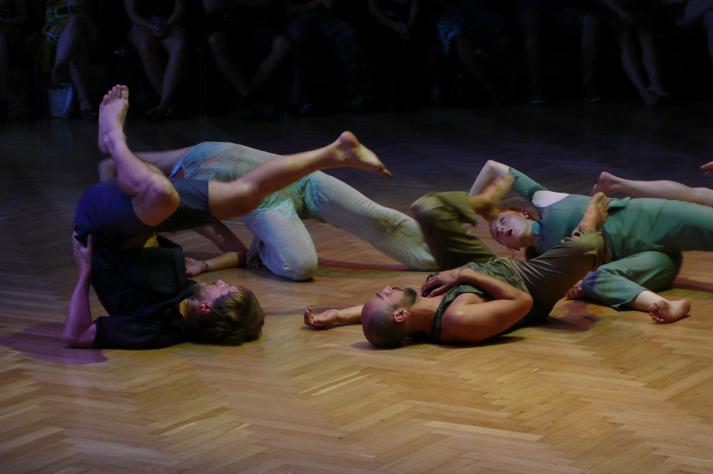

Collective Sensations (praticable) 
photo Yves Mettler In this group piece, imagination and sensation are nearly one and the same. Through movement and speech, sensations become collective as the five performers transform their bodies and change their states, sharing their imagination of becoming animals, wearing exquisite outfits or experiencing intense pleasures. The performers’ voices travel through the room and describe these fantasies while lights transform the open, natural space into an artificial environment.Read a longer text about the practice grounding the piece here Credits Choreography/Concept Alice Chauchat Dance Cecilia Bengolea, Frédéric de Carlo, François Chaignaud, Frédéric Gies, Lola Rubio Sound Design Peter Lenaerts Light Design Rut Waldeyer Costumes Yara Burkhalter Production management Christian Modersbach Coproduction Tanz im August Funded by Hauptstadtkulturfonds (Berlin) Coproduction Tanz im August with the support of: fabrik Potsdam, TanzPlan Potsdam: Artist-in-Residence Praticable was an open collective structure created in 2006 with Frédéric Gies, Frédéric de Carlo, Isabelle Schad and Odile Seitz for the horizontal distribution of movement knowledge and visibility. |